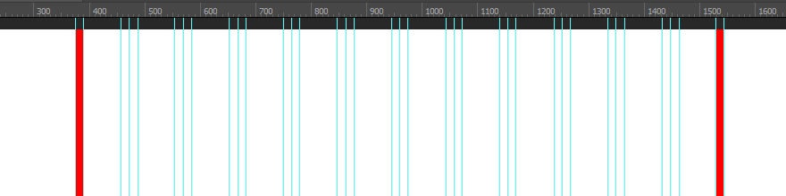
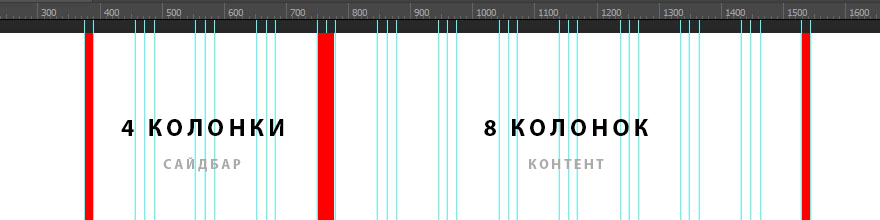
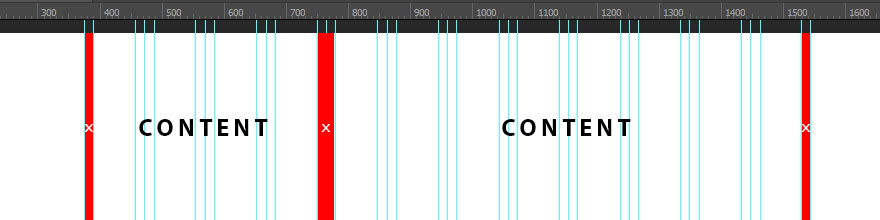
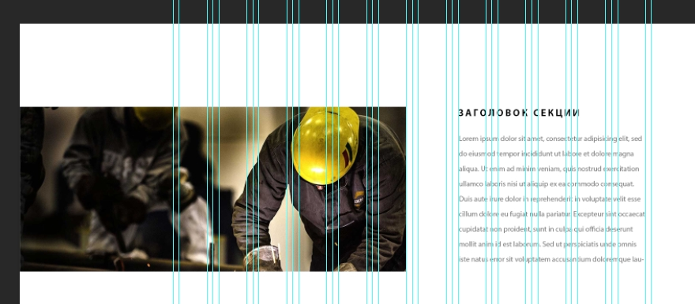

При создании дизайна сайтов в Adobe Photoshop не обойтись без использования какой-либо системы сеток. Можно создать сетку самостоятельно, используя направляющие, либо воспользоваться уже готовым, проверенным решением - готовой сеткой Bootstrap в формате PSD. Не смотя на то, что дефолтные размеры Bootstrap сетки несколько стандартизируют дизайн, данный вариант успешно используют в своей работе огромное количество веб-дизайнеров по всему миру. Кроме того, такая стандартизация позволяет максимально быстро выполнять HTML верстку созданного макета, что неминуемо приводит к ускорению работы над проектом в условиях разработки сайтов на потоке или создания шаблонов.

Параметры стандартной Bootstrap сетки в PSD формате:
- Общая ширина рабочей области: 1920px;
- Ширина контейнера с отступами: 1170px;
- Ширина колонки без отступов: 68px;
- Ширина отступа (Gutter): 15px;
- Система сетки: 12-ти колоночная.
Расстояние между колонками и некоторые размеры могут иметь погрешность +/- 1px в связи с тем, что некоторые нечетные величины не могут быть поделены поровну. Но это некритично в масштабах разработки PSD макета.
Правила работы с PSD сеткой Bootstrap
Существуют определенные правила работы с Bootstrap сеткой. Некоторые начинающие веб-дизайнеры не учитывают в своей работе эти правила, в результате чего возникает непонимание между верстальщиком и дизайнером, в случае, если над проектом работает команда. Bootstrap сетка в PSD формате для создания дизайна сайта разрабатывалась основываясь на "физических" свойствах сетки CSS фреймворка Bootstrap и дизайнер должен придерживаться определенных правил для исключения излишних коллизий в процессе разработки.
1. Крайние поля служат исключительно для отступов на малых разрешениях и не могут быть использованы для размещения каких-либо элементов дизайна или контента сайта.
2. Вы можете использовать любое количество одиночных колонок для визуализации различных блоков сайта.
3. После разделения макета на колонки и блоки, промежутки (Gutters) между ними не могут быть использованы для размещения каких-либо элементов дизайна или контента сайта.
4. Не бойтесь выходить за рамки сетки. Если вы решили сделать какую-то нестандартную секцию или блок - реализуйте вашу идею вне рамок Bootstrap сетки, если это необходимо. Но постарайтесь обеспечить ваше решение какой-либо системой, например, придерживайтесь центра макета или частично используйте возможности Bootstrap сетки, соблюдайте кратность элементов или придерживайтесь любой другой логической системы при создании нестандартного блока. Так вы значительно облегчите работу верстальщика, если над проектом трудится команда разработчиков. Вам скажут спасибо.
Последний пункт очень важен, так как многие начинающие веб-дизайнеры боятся выходить за рамки Bootstrap сетки и дизайн, в большинстве случаев, получается довольно однообразный и скучный. Помните, что направляющие Bootstrap сетки необходимы вам только для разметки блоков сайта, которые необходимо упорядочить в соответствии с системой сеток, это может быть разделение макета на базовые логические части - сайдбар + контент, определение элементов блока, таких, как айтемы карусели, секции новостей и так далее. В остальном, не стоит ограничиваться рамками сетки и делать визуализацию только по направляющим. Однако если вы создаете дизайн определенной секции или блока в соответствии с системой Bootstrap сетки, обязательно придерживайтесь правил из пунктов 1,2,3 выше.
Премиум уроки от WebDesign Master


Другие уроки по теме «Инструменты»
- Настройка Parcel для веб-разработки
- Tailwind CSS для начинающих. Подробный урок по подключению, настройке и использованию
- Настройка VS Code для веб-разработки
- Starter - Простой стартер для веб-разработки
- Урок по хостингу от А до Я. Сайты, базы, домены, SSL, SSH, sFTP
- Gulp - Актуальное и исчерпывающее руководство для самых маленьких